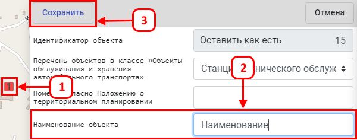
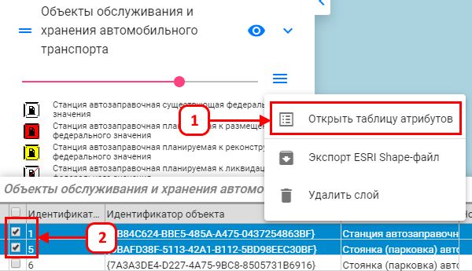
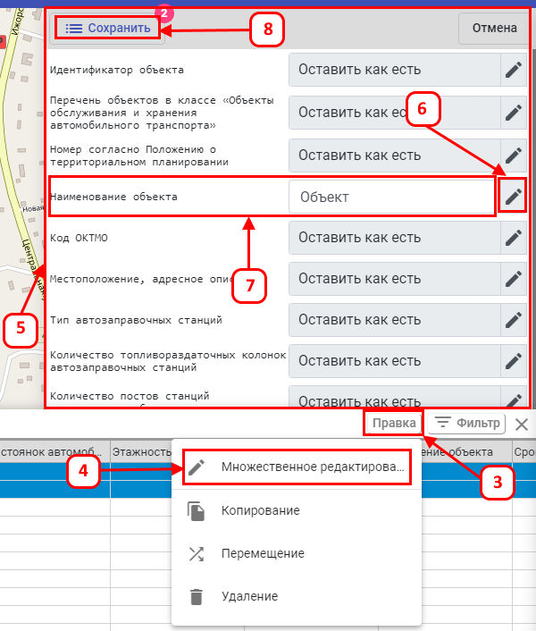

Внесение изменений в требуемую Приказом информацию объекта производится в форме
«Параметры» как для одного, так и для множества объектов одновременно.
Для одного объекта:
-
Откройте форму просмотра параметров объекта, нажав левой кнопкой мыши по отображению объекта на карте.
-
Внесите изменения в необходимые поля.
-
Нажмите «Сохранить».

Для множества объектов:
-
В списке слоёв нажмите правой кнопкой мыши на текущий слой,
в появившемся окне выберите «Открыть таблицу атрибутов».
-
Галочками выделите редактируемые объекты в таблице.

-
Нажмите кнопку «Правка».
-
Затем «Множественное редактирование».
-
Открылась форма редактирования параметров множества объектов.
-
Нажмите на иконку «Карандашик».
-
Затем введите необходимое значение в поле.
-
Нажмите «Сохранить».
